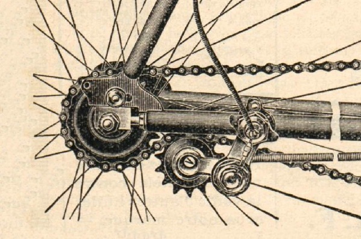

Quick Facts
• First bicycle chain patent: 1880
• Modern roller chain design: 1898
• Average chain links: 116
• Typical lifespan: 2,000-3,000 miles
The Early Days
Before the chain drive, bicycles relied on direct drive mechanisms. The introduction of the roller chain revolutionized cycling, enabling efficient power transfer and variable gear ratios.
Chain Technology Comparison
| Type | Durability | Weight | Cost |
|---|---|---|---|
| Standard Steel | High | 280g | $20-30 |
| Nickel Plated | Very High | 285g | $40-50 |
| Titanium | Excellent | 180g | $200+ |
Modern Innovations
Today's chains incorporate advanced materials and coatings, with some featuring hollow pins and plates to reduce weight while maintaining strength.